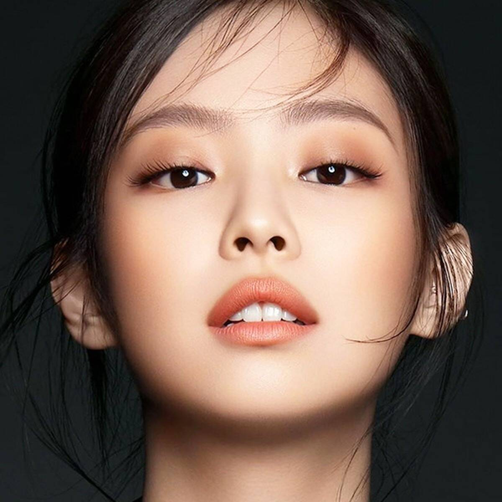
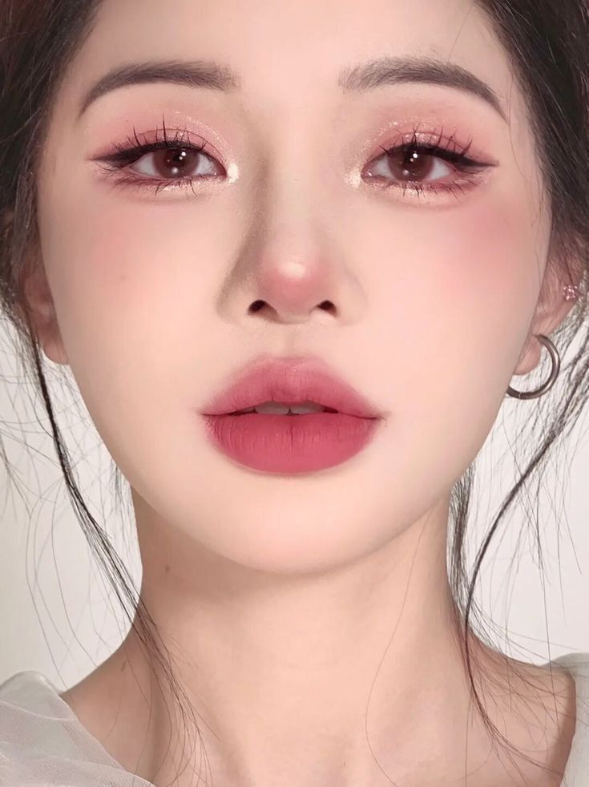
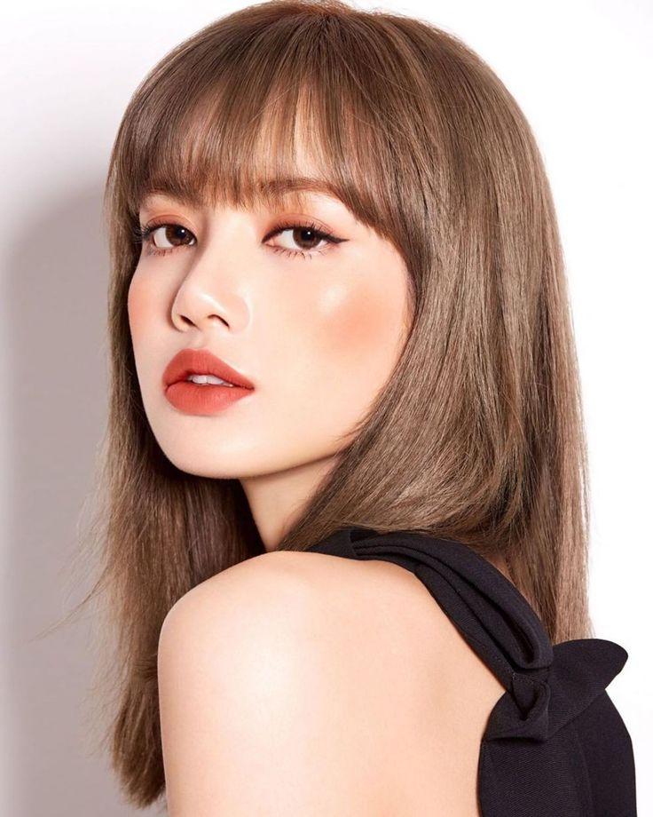

>
|



|
Beberapa waktu belakangan ini, dunia beauty didominasi oleh Korean makeup look. Wajah pale, blush on pink, dan bibir ombre yang bikin tampilan lebih cute, fresh dan innocent.
Tidak jarang juga banyak produk yang merambah ke lini produk dengan tema Korea seperti adanya Lip tint, BB Cushion yang sangat identik dengan item makeup khas Korea. Hal ini dikarenakan Korean Makeup Look membuat penampilan perempuan menjadi Cantik walaupun makeup yang dipakai tidak berlebihan. Tak hanya make up saja yang berpengaruh namun jika kamu ingin mendapatkan hasil make up natural ala Korea yang maksimal, lakukan lah juga hal yang sering dilakukan oleh orang Korea dengan rajin, yaitu melakukan perawatan skin care setiap harinya. Hal inilah yang membuat make up natural ala Korea menjadi tren di kalangan wanita.
Pasalnya make up ala Korea ini memang terlihat tidak tebal ataupun begitu ber-make up, sehingga bisa menjadi day-to-day look kamu. Meski berkesan tipis, namun sebenarnya make up natural ala Korea ini memberikan efek yang besar dalam memperindah penampilan dan juga bentuk wajah kamu. Di mana poin utama dalam make up natural ala Korea ini terletak pada mata, pipi dan bibir saja. Untuk membuat riasan Korean look memang susah-susah gampang. Namun ada beberapa hal dasar yang membuat kamu terlihat cute seperti perempuan Korea tanpa harus menggunakan produk makeup asal Korea, tapi cukup dengan produk makeup yang sudah kamu miliki.
Beberapa tahun belakangan budaya Korea semakin digandrungi masyarakat Indonesia, khususnya anak muda. Bahkan kecintaan terhadap budaya Negeri Ginseng itu telah menjadi fenomena tersendiri di Tanah Air.
Budaya K-Pop tak sekadar menonton drama atau mengidolakan artis Korea saja, melainkan sudah masuk ranah kuliner, bahasa, gaya berpakaian hingga makeup. Ya, riasan wajah bergaya Korea atau Korean look merupakan salah satu gaya makeup yang banyak diikuti anak muda Indonesia.
Korean look memiliki ciri khas berupa riasan wajah yang natural dan minimalis tapi tetap membuat tampilan terlihat sempurna. Contohnya adalah makeup ombre lips ala Korea yang sempat heboh dan menjadi tren di Indonesia. |
Pandangan menjadi lebih tajam, kulit yang tampak flawless, dan kilau yang natural adalah karakteristik khas dari Korean Look Makeup. Tidak heran, banyak perempuan yang berlomba-lomba untuk mendapatkan tampilan tersebut.
Apa Itu Korean Look Makeup?
Korean Look Makeup atau dikenal juga sebagai K-Beauty Makeup, adalah gaya riasan yang berasal dari Korea Selatan. Gaya ini dikenal dengan tampilannya yang alami, cerah, dan segar. Korean Look Makeup menggunakan teknik-teknik khusus dan produk-produk yang memberikan hasil yang natural, sehingga cocok untuk digunakan sehari-hari atau saat acara formal.
Sebelum memulai riasan, penting untuk menyiapkan kulitmu dengan skincare yang benar-benar memanjakan. Korean skincare terkenal dengan perawatan yang intensif dan melibatkan langkah-langkah yang sangat detail. Mulailah dengan membersihkan wajahmu menggunakan cleanser yang cocok dengan tipe kulitmu. Setelah itu, lanjutkan dengan toner, essence, serum, dan pelembap yang sesuai. Dengan kulit yang sehat, tampilan Korean makeupmu akan terlihat lebih prima!
Salah satu ciri khas Korean makeup adalah tampilan wajah yang flawless dan natural. Untuk mencapai hasil ini, cobalah menggunakan foundation dengan formula ringan dan coverage yang bisa diatur. Pastikan kamu memilih shade yang tepat agar wajahmu terlihat segar dan tidak tampak “terlalu putih” seperti mengenakan topeng. Dengan menggunakan foundation yang sesuai, kamu bisa menciptakan tampilan Korean makeup ala Oppa dan Unnie dengan mudah!
|
|